1 Biofabrication History and Definition
In this chapter
- 1.1 Aim and Scope of Biofabrication
- 1.2 Implants and Transplantation
- 1.3 Tissue Engineering and Regenerative Medicine
- 1.4 Engineering in Medicine and Diagnostics
- 1.5 Applications beyond Regenerative Medicine
- 1.6 Definition of Biofabrication
- 1.7 Ethical Horizon and Societal Context of Biofabrication
- 1.8 Summary
- 1.9 Exercises
- 1.10 References
Biofabrication brings together cells, biomaterials and engineering to build living tissues. This chapter traces how the field arose: from prostheses and organ transplantation, through tissue engineering, to the automated, reproducible fabrication of tissue-like structures. It then surveys the main application areas — regenerative medicine, drug testing and personalised medicine, diagnostics, soft robotics and cultured meat — gives the definition of biofabrication used throughout this book, and closes with the ethical, regulatory and societal questions that the field raises.
1.1 Aim and Scope of Biofabrication
The dream of repairing injured or damaged tissues is as old as humanity itself. Ancient myths reflected this desire: the story of Icarus symbolised ambition to transcend biology through technology, while Prometheus embodied the concept of endless regeneration (Figure 1.1). These cultural narratives foreshadowed the scientific pursuit of prosthetics and regenerative medicine.
Figure 1.1 brings together three Baroque paintings of these myths. Figure 1.1A shows Icarus tumbling from the sky after his wings have failed, a warning about technology pushed beyond its limits. Figure 1.1B shows Prometheus pinned down while an eagle tears at his liver, an organ that in the myth grows back every night, and the detail in Figure 1.1C zooms in on this attack on the liver. The liver was thus cast as an organ of renewal long before regeneration could be studied, and together the panels show that the idea of repairing and regenerating the body is far older than any medical means of doing so.
In nature, true regeneration exists: salamanders can regrow entire limbs after amputation, progressing through blastema formation, tissue remodelling, and full restoration (Figure 1.2). Humans, by contrast, have only a limited regenerative capacity — skin renews, bones remodel, but tendons and entire organs lose the ability to regenerate after early development.
Figure 1.2 follows an axolotl forelimb for almost five months after amputation. In the upper row, the limb is removed at day 0; during the first three weeks only a small rounded bud, the blastema, is visible at the stump. This bud then lengthens into an early tiny limb in which digits appear, grows into a late tiny limb and, by about 146 days post-amputation, has become a complete regenerate. The lower row shows an unamputated limb photographed at the same time points, so that regeneration can be compared directly with normal growth. The sequence shows that the salamander rebuilds the entire limb, digits included, rather than merely closing the wound — precisely the capacity that human tendons and organs lack.
Inspired by both myths and biology, the vision of restoring the body has shifted from imagination to innovation. Today, biofabrication represents the convergence of engineering, biology, and materials science, transforming an ancient dream into medical reality. This chapter traces that trajectory — from prosthetics and transplantation to tissue engineering and biofabrication — setting the stage for the rest of this book.
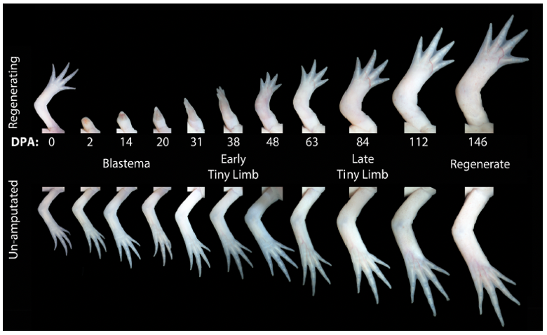
1.2 Implants and Transplantation
The twentieth century marked a turning point in medicine: for the first time, lost or failing body parts could be replaced not only with mechanical substitutes but also with biological transplants. These two complementary strategies — engineering devices and biological transplantation — transformed healthcare, yet each carried inherent limitations.
Engineering solutions such as prosthetics, implants, pacemakers, and mechanical hearts restore function through materials and mechanics. They avoid donor shortages but face challenges of durability, integration, and infection. In contrast, biological transplantation replaces an organ with living tissue, restoring natural function but introducing the problem of immune rejection and the scarcity of suitable donors (Table 1.1).
Over time, advances such as immunosuppressive drugs (e.g. cyclosporine) made transplantation routine, while innovations in biomedical engineering provided lifesaving devices when donor organs were unavailable. Together, these approaches illustrate the ingenuity and constraints that ultimately pushed medicine toward new paradigms such as tissue engineering (Section 1.3).
| Example | Function | Limitation |
|---|---|---|
| Wooden toe (Egypt) | Basic prosthetic support | Limited function, no integration |
| Ambroise Paré’s hand | Mechanical grasp | Heavy, limited dexterity |
| Organ transplantation | Restores organ function | Rejection, donor shortage |
| Hip implant | Load-bearing replacement | Wear, loosening over time |
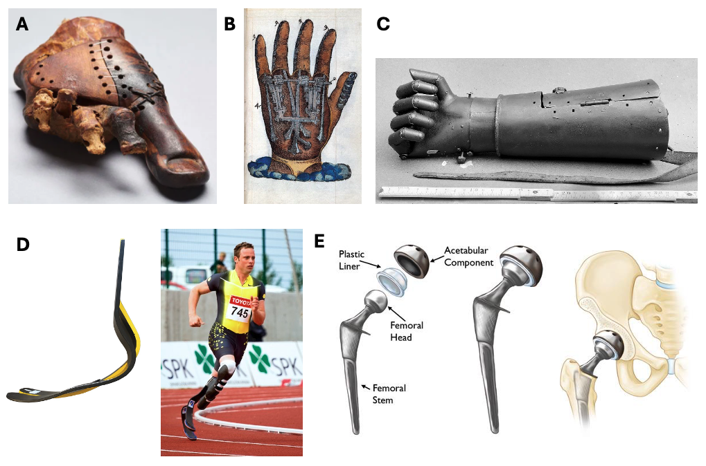
1.2.1 Engineering approaches: prosthetics and implants
From the wooden toe of ancient Egypt to Ambroise Paré’s Renaissance mechanical hand, prosthetics have long reflected humanity’s effort to restore lost function. Modern prosthetics, such as carbon-fibre running blades, demonstrate how advanced materials can not only replace but also enhance human performance (Figure 1.3).
Figure 1.3 arranges five prostheses roughly in chronological order. The Egyptian wooden toe (Figure 1.3A), Paré’s mechanical hand (Figure 1.3B) and the iron hand of a 16th-century knight (Figure 1.3C) all replace a lost body part with rigid wood or metal shaped like the missing anatomy; they provide basic support or grip but are heavy and offer little dexterity (Table 1.1). The carbon-fibre running blade in Figure 1.3D, shown both as a drawing and worn by an athlete, no longer resembles a foot at all: its curved, bioinspired shape is designed for performance rather than appearance. Finally, the total hip replacement in Figure 1.3E, with femoral stem and head, plastic liner and acetabular component, has porous-coated surfaces designed to integrate with the surrounding bone. Read from A to E, the figure traces a shift from imitating form towards restoring function and achieving integration — the theme of the implants discussed next.
Implants represent another engineering milestone. Pacemakers maintain cardiac rhythm through electrical stimulation, while devices such as the Carmat mechanical heart provide circulatory support in patients with end-stage heart failure (Figure 1.4C–D). These examples show how engineering bypasses donor shortages but introduces new challenges of wear, infection, and finite lifespan.
The Carmat Aeson total artificial heart illustrates both the promise and the fragility of such devices. CE-marked in Europe in December 2020, it passed the milestone of 100 implants in early 2025 and obtained certification under the EU Medical Device Regulation in July 2025 — yet the company entered receivership in mid-2025 and was taken over by a new owner in December 2025 (CARMAT, 2025). Bringing a complex implant to routine clinical use is as much an economic and regulatory challenge as an engineering one.
1.2.2 Biological approaches: transplantation
Transplantation provides a biological solution by restoring organ function with living tissue. Kidney transplantation is a landmark example, but rejection limited early success. The discovery of immunosuppressive drugs such as cyclosporine revolutionised the field by preventing T-cell–mediated rejection (Figure 1.4A–B). Today, transplantation is a routine clinical practice, yet remains constrained by limited donor availability and lifelong immunosuppression.
The scale of the shortage is large: in the United States alone about 110,000 people are on the transplant waiting list, more than 49,000 transplants were performed in 2025, and an estimated 12 people die each day while waiting (HRSA, 2026). One response is xenotransplantation — transplanting organs from genetically modified pigs. After transplants into brain-dead recipients in 2021–2022, the first living patient received a gene-edited pig kidney in 2024 (Kawai et al., 2025), and in 2025 the US Food and Drug Administration (FDA) cleared the first formal clinical trials of pig kidneys carrying up to ten genetic modifications: knock-out of the glycan antigens that trigger hyperacute rejection, insertion of human transgenes that regulate complement and coagulation, and inactivation of porcine endogenous retroviruses (Woolley, 2026). Xenotransplantation and biofabrication address the same shortage from opposite directions — one adapts a living donor organ, the other aims to build the organ.
Figure 1.4 places the two strategies of this section side by side. On the biological side, Figure 1.4A shows how a donor kidney is positioned during transplantation surgery, with its vessels connected to those of the recipient. Figure 1.4B explains why such a graft can survive: activation of the T-cell receptor raises the intracellular Ca²⁺ concentration and activates calcineurin, which dephosphorylates NFAT so that it moves into the nucleus and switches on transcription of the IL-2 gene; IL-2 in turn drives the T-cell proliferation that leads to graft rejection. Cyclosporine, bound to cyclophilin, inhibits calcineurin and so interrupts this cascade at an early step. On the engineering side, Figure 1.4C shows a pacemaker generator photographed next to a wristwatch, which conveys how compact the device is, and Figure 1.4D shows the Carmat Aeson total artificial heart discussed above. The figure thus contrasts a drug that makes a living donor organ tolerable with devices that take over organ function without any donor.
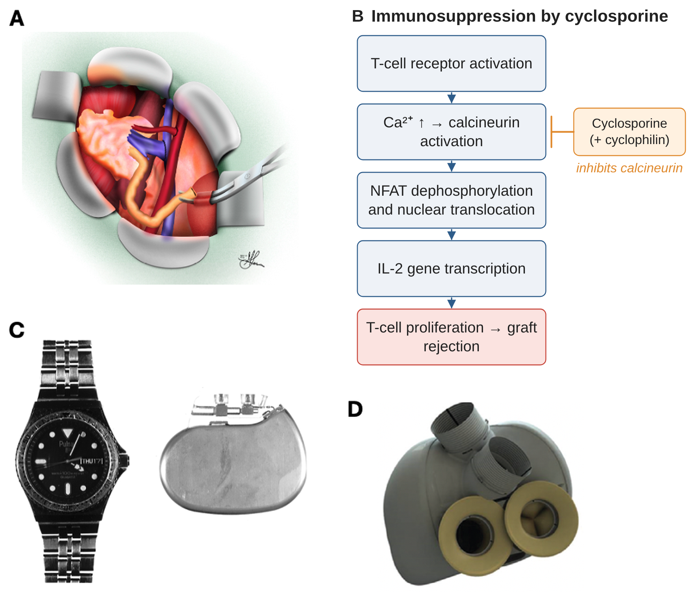
1.2.3 Historical surgical innovations
Even before modern transplantation, surgeons experimented with using tissue from one part of the body to reconstruct another. Gaspare Tagliacozzi’s 16th-century rhinoplasty technique, using an arm-to-nose flap, exemplifies early biological reconstruction (Figure 1.5). These pioneering attempts highlight the continuity between surgical creativity, biological replacement, and modern regenerative medicine.
Figure 1.5A, an engraving from Tagliacozzi’s treatise of 1597, shows a patient sitting up in bed with his raised arm strapped to his head by a harness, so that a flap of skin from the arm lies against the nose. Figure 1.5B enlarges the boxed area: the straps of the harness run over the head and around the raised arm, so that the arm cannot move while the flap heals. The harness keeps the arm fixed against the face so that the living skin flap can attach to the nose. Because the tissue comes from the patient’s own body, the procedure is an early form of biological reconstruction with autologous tissue — an idea that tissue engineering later takes up with the patient’s own cells (Section 1.3).
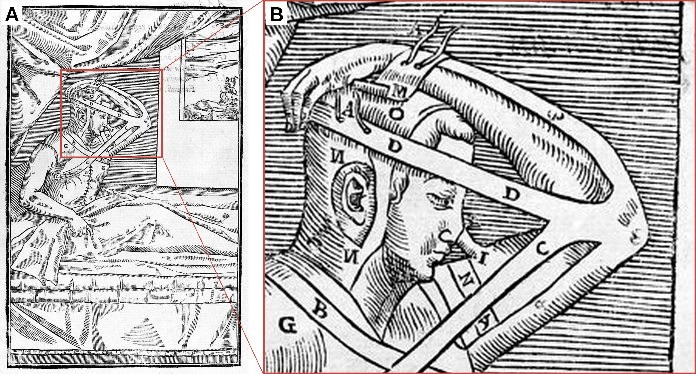
While these surgical and transplant strategies provided critical advances, they also revealed the limitations of both mechanical and biological replacements. These limitations opened the door to a new paradigm — tissue engineering — where living cells, scaffolds, and bioreactors are combined to create functional tissues from the ground up.
1.3 Tissue Engineering and Regenerative Medicine
Building on the limitations of implants and transplantation, tissue engineering emerged as a new field that sought to restore function not by replacement, but by regenerating living tissue itself (Figure 1.6). Tissue engineering combines materials science with cell biology to create living implants. The landmark 1997 “Vacanti mouse,” which grew cartilage shaped like a human ear on its back (Figure 1.7), symbolised the promise of engineering living tissues (Cao et al., 1997). This experiment captured public imagination and controversy, marking a turning point: from repairing the body with external materials to attempting to engineer tissues themselves.
Figure 1.7 shows the two stages of this experiment. In Figure 1.7A, the biodegradable scaffold, moulded into the shape of a human ear and seeded with cartilage cells, is seen in a culture dish before implantation. In Figure 1.7B, the construct has been implanted on the back of a mouse, where the cells developed into a cartilaginous structure that preserved the ear shape. The images made a simple principle visible to scientists and the public alike: the scaffold dictates the shape of an engineered tissue, while the living cells supply the tissue itself.
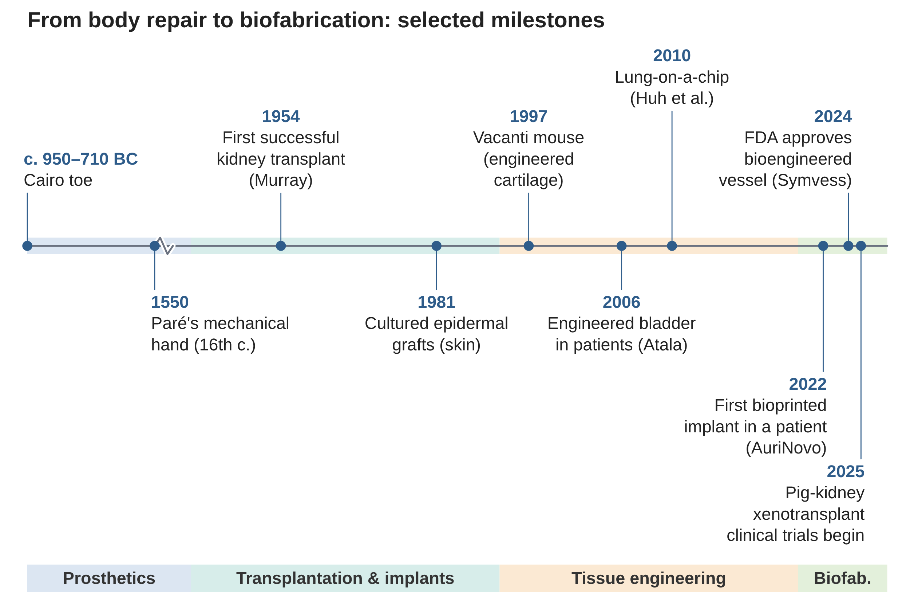
Unlike prosthetics or donor organs, tissue engineering envisions building patient-specific implants using their own cells. This approach could reduce the need for immunosuppressive drugs and overcome donor shortages. Early clinical successes include engineered bladders (Atala et al., 2006) and cartilage transplants (Acevedo Rua et al., 2021). Yet, most tissue engineering remains artisanal and not easily scalable — a challenge biofabrication explicitly aims to solve.
More recent milestones show the path from bench to clinic. In 2022, an ear-shaped implant bioprinted from a patient’s own chondrocytes (AuriNovo, 3DBio Therapeutics) was implanted in a first-in-human clinical trial for microtia (3DBio Therapeutics, 2022). In December 2024, the US FDA approved the first bioengineered human blood vessel, Symvess (Humacyte): an acellular tissue-engineered vessel produced by growing human vascular cells on a degradable scaffold in a bioreactor and then removing the cells, leaving a collagen-rich conduit that can be stored off-the-shelf and implanted without immunosuppression (U.S. FDA, 2024). Both examples rely on the automated, standardised production that defines biofabrication (Section 1.6).
The timeline in Figure 1.6 places these milestones in a longer perspective. It runs from the Cairo toe (c. 950–710 BC) and Paré’s mechanical hand (16th century) through the first successful kidney transplant (1954) and cultured epidermal grafts for skin (1981) to the Vacanti mouse (1997), engineered bladders in patients (2006) and the lung-on-a-chip (2010). The most recent entries — the bioprinted AuriNovo implant (2022), the FDA approval of Symvess (2024) and the first clinical trials of gene-edited pig kidneys (2025) — crowd together at the right-hand end. Coloured bands beneath the axis divide this history into four successive eras: prosthetics, transplantation and implants, tissue engineering and, most recently, biofabrication. Read from left to right, the figure shows how each era grew out of the limitations of the one before, and how milestones have followed each other ever more closely in recent decades.
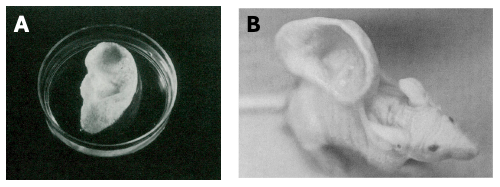
To move from concept to clinic, tissue engineering required not only cells and scaffolds, but also controlled environments and applications where these constructs could prove their value.
1.4 Engineering in Medicine and Diagnostics
Engineering advances extend beyond implants and tissue engineering to medical practice itself. Modern operating rooms rely on highly engineered tools — from catheters and bypass machines to imaging technologies and surgical robots such as the Da Vinci system. These technologies enable minimally invasive and even remote surgery, and medicine today is inseparable from engineering innovation.
Examples illustrate this impact across therapy and diagnosis (Figure 1.8). The heart–lung machine provides extracorporeal circulation during open-heart surgery, temporarily taking over the function of heart and lungs. Surgical robotics such as the Da Vinci system allow minimally invasive operations with enhanced precision and dexterity, reducing patient trauma and recovery time. MRI imaging provides non-invasive, real-time visualisation of soft tissues, transforming diagnostics and enabling personalised treatment strategies. These innovations highlight how engineering solutions sustain life, expand surgical capacity, and improve patient monitoring.
The three schematics in Figure 1.8 show how these systems are built. In the heart–lung machine (Figure 1.8A), venous blood drains from the patient into a reservoir, is driven by a pump through an oxygenator with heat exchanger and returns oxygenated to the arterial circulation, with a filter and bubble trap in the circuit; heart and lungs can therefore be stopped during the operation. In robot-assisted surgery (Figure 1.8B), the surgeon works at a console with a 3D view, hand controllers and pedals, while a patient-side cart holds the endoscope and instruments that enter the body through keyhole incisions; motion scaling and tremor filtering between console and cart account for the gain in precision. In magnetic resonance imaging (Figure 1.8C), the patient lies inside a superconducting magnet whose gradient and radiofrequency coils excite hydrogen nuclei and spatially encode their signal, yielding soft-tissue images without ionising radiation. Together the panels cover life support, surgery and diagnosis.
Engineering advances not only transformed clinical practice but also laid the groundwork for biofabrication. By combining automation, materials science, and cell biology, biofabrication emerged as a way to build tissues with unprecedented control.
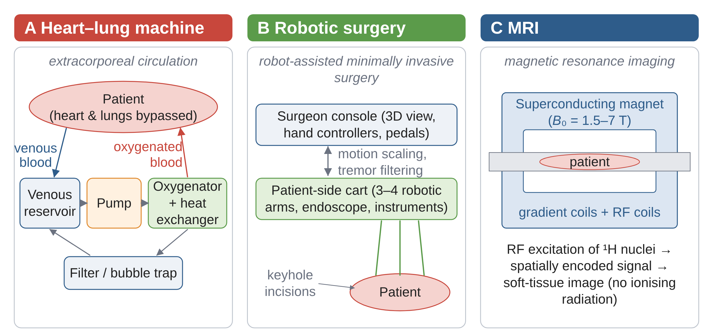
1.5 Applications beyond Regenerative Medicine
While regenerative medicine has been the main driver of biofabrication, the field is rapidly expanding into other domains that impact research, diagnostics, and technology.
1.5.1 Pharmaceuticals and Biofabrication
Biofabrication is opening up transformative possibilities in the pharmaceutical sector. The same technologies used to engineer tissues and soft robotic systems are now being applied to improve how drugs are developed, tested, and delivered. Key applications include bioprinted tablets, drug-testing tissues, bioprinted organoid-on-a-chip, and controlled-release devices (Figure 1.9).
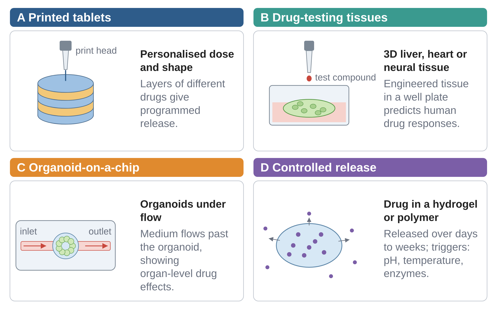
Bioprinted tablets
Three-dimensional (3D) printing technologies allow the production of pharmaceutical tablets with precisely controlled geometry, porosity, and drug distribution. Unlike traditional pressing methods, bioprinting can create tablets with complex internal architectures, enabling personalised dosing and tailored drug-release profiles. For example, the arrangement of two drugs within a printed tablet determines whether they are released together or one after the other, or porous structures can be engineered for rapid disintegration in the stomach (Goyanes et al., 2015) (Figure 1.10). This approach is particularly attractive for paediatrics and geriatrics, where individualised dosages are often required.
Figure 1.10 summarises how the study of Goyanes et al. (2015) was set up. The tablet is first designed as a CAD model and then printed by fused deposition modelling from polymer filaments loaded with drug (Figure 1.10A). The internal arrangement of the two drugs then determines how they are released. When drug A and drug B are printed in alternating layers (Figure 1.10B), both are exposed to the dissolution medium at the same time and their release curves almost coincide. When drug A forms a core inside a shell of drug B — the caplet-in-caplet design of Figure 1.10C — drug B is released first and drug A only after a delay. The geometry of the printed tablet thus programmes the release profile of each drug.
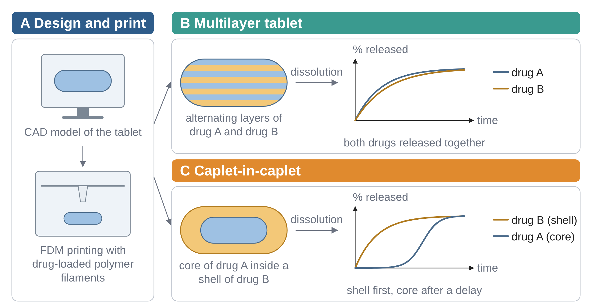
Drug-testing tissues
Culturing cells in 3D bioprinted scaffolds generates tissues that mimic human physiology far more accurately than conventional 2D petri dish cultures. Such engineered tissues—liver, cardiac, or neural constructs—provide a biologically relevant environment for testing how new drug compounds behave. This reduces the reliance on animal models, improves prediction of human responses, and allows for high-throughput drug screening in standardised formats. For instance, bioprinted liver tissues can model drug metabolism and toxicity, critical aspects in early-stage pharmaceutical development (Ma et al., 2018, 2016; Nguyen et al., 2016) (Figure 1.11).
Figure 1.11 shows how such a liver construct is produced by light-based bioprinting (Ma et al., 2016). UV light at 365 nm is directed onto a digital micromirror device chip, which projects the pattern of a digital mask through a projection lens onto a cell–material solution beneath a coverslip, so that the material is patterned according to the mask. In the first step, hepatic progenitor cells derived from human induced pluripotent stem cells (hiPSC-HPCs) are patterned with a first mask; in the second step, a second mask places supporting cells in the spaces around them. The result is a hexagonal array of liver lobule analogues, visible in the fluorescence images on the right as the hepatic cells (green), the supporting cells (red) and their overlay. Because the construct mimics the lobular architecture of the liver and retains liver-specific functions, it is suited to drug-metabolism studies.
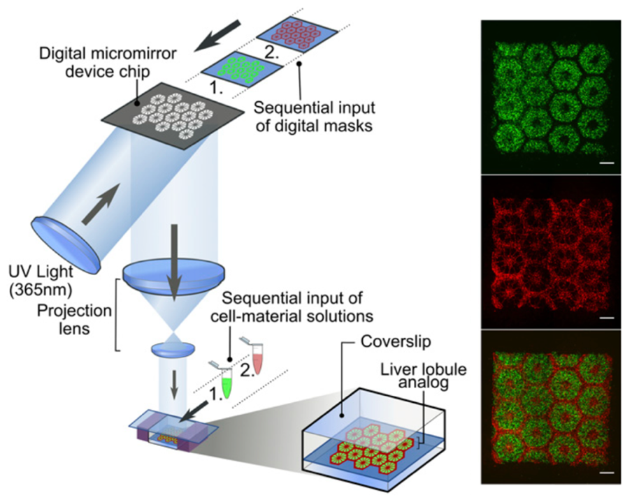
Bioprinted organoids-on-a-chip
Organoids are miniature, self-organised tissue models derived from stem cells. When combined with microfluidic “organ-on-a-chip” platforms, bioprinted organoids can be cultured under controlled flow conditions that reproduce the dynamic microenvironment of the human body (Figure 1.12). This allows researchers to simulate organ-level functions, such as drug absorption in the intestine (Kim et al., 2012) or cardiac beating in the heart (Zhang et al., 2016), while also enabling multi-organ chips that replicate systemic drug interactions (Maschmeyer et al., 2015; Skardal et al., 2016). These platforms are becoming powerful tools for both fundamental research and preclinical testing.
Figure 1.12 shows one such multi-organ device, the four-organ chip of Maschmeyer et al. (2015). In the three-dimensional view (Figure 1.12A), a PDMS–glass chip with a footprint of 76 mm × 25 mm, held between two polycarbonate cover plates, contains four culture compartments for intestine (1), liver (2), skin (3) and kidney (4) tissue. The compartments are served by two separate microfluidic circuits: a surrogate blood circuit (pink) and an excretory circuit (yellow). The top view in Figure 1.12B marks where each circuit can be sampled — spots A–C in the blood circuit and D and E in the excretory circuit. Because the organ equivalents are linked by a shared circulation, a drug and its metabolites can pass from one tissue to the next, which is what allows the chip to replicate systemic drug metabolism and toxicity rather than the response of a single organ.
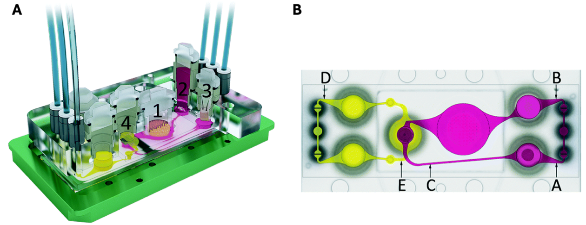
Controlled-release devices
Biofabrication can also produce smart drug-delivery systems. Hydrogels (Li and Mooney, 2016), biodegradable polymers (Dananjaya et al., 2024), or nanocellulose scaffolds (Klemm et al., 2018; Sharma et al., 2019) can be printed into devices that encapsulate active pharmaceutical ingredients and release them in a time-controlled or stimuli-responsive manner. Triggers can include pH, temperature, or even enzymes present in specific tissues. Such systems reduce the frequency of dosing, maintain therapeutic drug levels for longer periods, and minimise side effects.
By combining precise 3D printing with advanced biomaterials and living cells, biofabrication enables the creation of customisable drug formulations, physiologically relevant test systems, and next-generation delivery devices. This is shifting pharmaceutical development toward more personalised, efficient, and predictive medicine.
1.5.2 Diagnostics and Biofabrication
Biofabrication is not only revolutionising therapeutics and drug development but also transforming the field of medical diagnostics. The ability to combine advanced biomaterials, living cells, and microfabrication technologies makes it possible to develop diagnostic tools and disease models that are both highly sensitive and physiologically relevant (Figure 1.13).
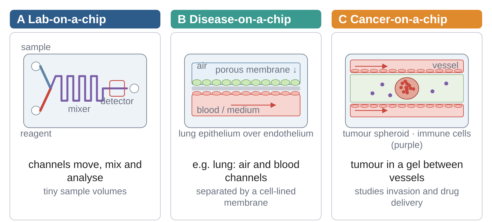
Lab-on-chip devices
Lab-on-chip (LOC) systems miniaturise laboratory processes onto microfluidic chips, enabling rapid, low-cost, and high-throughput analyses using only microliters of patient samples (Whitesides, 2006). By integrating channels, pumps, and sensors on a single platform, these devices can perform complex assays such as blood analysis, pathogen detection, or biomarker quantification. The small scale allows precise control of fluids, efficient reaction kinetics, and parallel testing. LOC devices are already being applied in point-of-care diagnostics, where they can deliver fast results at the bedside or in resource-limited settings, reducing reliance on centralised laboratories.
Disease models
Beyond analysis, LOC technologies can be combined with bioprinting and tissue engineering to create disease-on-a-chip systems. In these models, human cells are cultured in microengineered environments that mimic the structural and mechanical properties of tissues. For example, lung-on-chip devices can recreate the alveolar barrier and simulate breathing motions (Figure 1.14), enabling detailed study of respiratory infections, drug toxicity, or environmental exposures (Huh et al., 2010; Si et al., 2021). Similarly, liver- (Jang et al., 2019) or kidney-on-chip (Jang and Suh, 2010) systems can reproduce organ-specific functions to study how diseases develop and how potential treatments act in a controlled yet physiologically relevant setting. Liver-on-chip systems are mainly used for metabolism and hepatotoxicity studies (predicting how drugs are processed) and kidney-on-chip systems are critical for nephrotoxicity testing (drug safety) and for modelling renal disease processes. Together, they show how organ-specific microphysiological systems can provide physiologically relevant insights that are not possible with 2D cultures or animal models.
The lung-on-a-chip of Huh et al. (2010), shown in Figure 1.14, achieves this with a simple layout. A central channel is divided by a thin porous membrane into an upper air channel lined with alveolar epithelial cells and a lower vascular channel lined with endothelial cells and perfused with medium, so that the two cell layers form a miniature alveolar barrier. A hollow vacuum chamber runs along each side. With the vacuum off (Figure 1.14A), the membrane is relaxed; when vacuum is applied (Figure 1.14B), the side walls are pulled outwards and the membrane and its cell layers are stretched. Repeating this cycle reproduces the rhythmic stretching of breathing, which allowed the device to be used to study barrier function, inflammatory responses, nanoparticle uptake and the toxic effects of environmental exposures under realistic mechanical conditions.
The regulatory environment has moved decisively in favour of such human-relevant models. The FDA Modernization Act 2.0 (December 2022) removed the legal requirement for animal testing before human trials in the United States: applicants may now submit ‘nonclinical tests’, explicitly including cell-based assays, microphysiological systems such as organ-on-chip devices, and computational models. In April 2025 the FDA published a roadmap to reduce and ultimately replace animal studies in preclinical safety testing, prioritising organ-on-chip and AI-based approaches, and in April 2026 it reported its first-year results, including a searchable database of accepted alternative methods (U.S. FDA, 2025, 2026). In Europe, Directive 2010/63/EU embeds the 3Rs principle (replace, reduce, refine) in all animal research. For biofabrication this means that organ-on-chip systems are moving from research tools to accepted components of the drug-development pipeline — a theme developed in Chapter 3.
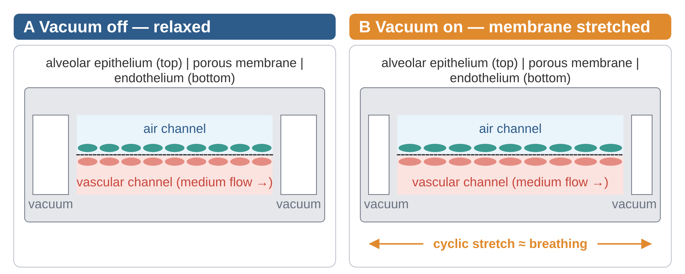
Cancer-on-chip models
Cancer research benefits especially from biofabricated disease models. Traditional 2D cancer cell cultures lack the complexity of tumours, while animal models often fail to replicate human tumour biology. Cancer-on-chip systems overcome these limitations by recreating the tumour microenvironment, including 3D cell architecture, extracellular matrix, vascularisation, and mechanical stresses (Sontheimer-Phelps et al., 2019). These platforms allow researchers to study cancer progression, metastasis (Bersini et al., 2014; Hassell et al., 2017) (Figure 1.15), and response to therapies in a way that is much closer to the human condition (Aung et al., 2020). They are also powerful tools for testing immunotherapies, as immune cells can be co-cultured with tumour tissues under controlled flow conditions. Importantly, cancer-on-chip devices hold promise for personalised oncology, where patient-derived tumour cells can be tested against different treatments to guide clinical decision-making.
Figure 1.15 shows a lung cancer-on-chip built on the same principle as the lung-on-a-chip of Figure 1.14 (Hassell et al., 2017). In the cross-section of Figure 1.15A, the upper air channel represents the alveolar lumen and is lined with alveolar epithelial cells, among which non-small cell lung cancer (NSCLC) cells grow on an ECM-coated porous membrane. The lower channel is lined on all four sides with lung microvascular endothelial cells, forming a vessel-like lumen through which medium flows, and vacuum chambers on both sides stretch the membrane cyclically. Figure 1.15B gives the qualitative result: tumour cells expanded more slowly in chips exposed to breathing-like stretch than in chips without stretch, and invaded less. The mechanical environment of an organ, and not only its cell types, therefore shapes how a tumour grows and invades — an effect that a static 2D culture cannot reveal.
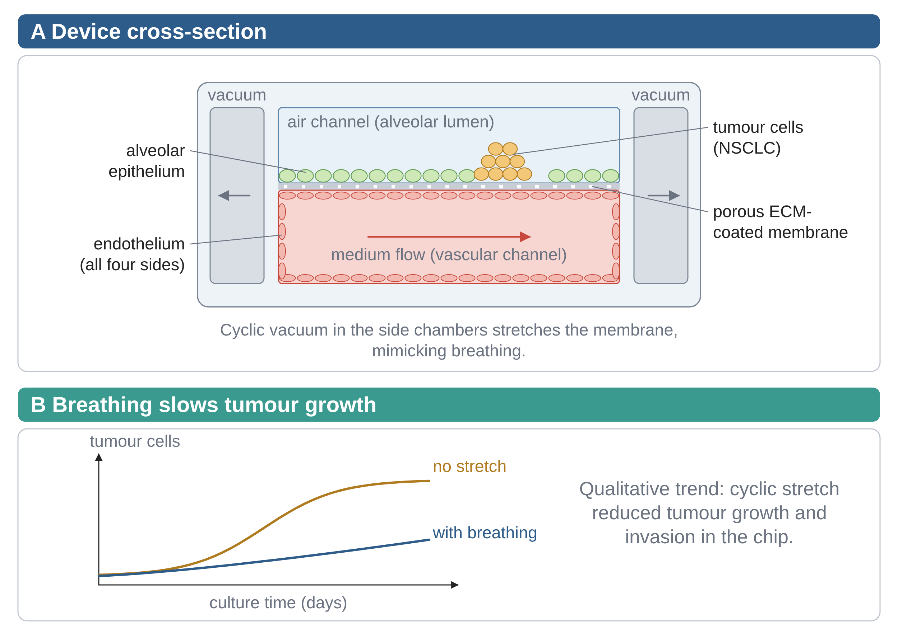
Biofabrication brings together microfluidics, tissue engineering, and cellular biology to create diagnostic systems that are both analytical tools and living models of disease. Lab-on-chip devices provide rapid and portable diagnostics, while disease-on-chip and cancer-on-chip platforms reproduce human pathophysiology for research and personalised medicine. Together, they represent a major step toward more accurate, predictive, and individualised healthcare.
1.5.3 Soft robotics
Beyond therapeutic and diagnostic uses, biofabrication also extends into soft robotics, where living tissues become functional components of machines. Soft robotics takes inspiration from biology to build flexible, adaptive machines. A particularly exciting frontier is biohybrid actuators: devices where living muscle cells provide the contractile force, essentially turning biological tissue into a robotic “motor” (Chan et al., 2012).
Two main strategies are emerging:
- Skeletal muscle–based actuators
Researchers have engineered muscle strips from myoblasts (muscle precursor cells) cultured in hydrogels. When stimulated electrically, these engineered tissues contract and relax, bending or moving a flexible scaffold. Morimoto and Takeuchi even built a small walking biohybrid robot powered by an antagonistic pair of skeletal muscle tissues, mimicking how biceps and triceps coordinate limb motion (Morimoto et al., 2018) (Figure 1.16). This approach allows precise control by adjusting stimulation frequency and voltage.
Figure 1.16 breaks the movement of such a robot into three states. At rest (Figure 1.16A), two engineered skeletal muscle tissues are anchored on either side of a joint in a flexible skeleton; both are relaxed and the joint stays straight. When the left muscle is electrically stimulated (Figure 1.16B), it contracts while the right muscle stays relaxed, and the joint bends to the left; stimulating the right muscle instead (Figure 1.16C) bends the joint to the right. Alternating the stimulation therefore produces a reciprocating motion. Because a muscle can only pull, two opposing muscles are needed to move the joint in both directions — the antagonistic principle by which biceps and triceps move the forearm.
- Cardiomyocyte-driven actuators
Cardiomyocytes (heart muscle cells) are special because they contract spontaneously and rhythmically without external stimulation (Feinberg et al., 2012). By embedding cardiomyocytes (often derived from human induced pluripotent stem cells, hiPSC-CMs) onto thin polymer films or hydrogels, researchers create bioactuators that “beat” on their own. These can bend microcantilevers, pump fluids, or even power tiny swimming robots. Unlike skeletal muscle actuators, which need electrical pulses, cardiomyocyte-based bioactuators function like self-powered oscillators.
For example, thin sheets of cardiomyocytes aligned on micropatterned substrates can form patches that beat in synchrony, generating contractile forces strong enough to bend flexible polymers. Scaling up, such cardiac sheets have been explored not only for robotics, but also for bioartificial cardiac patches that could aid in heart regeneration.
These two systems show the spectrum of biohybrid robotics: from controllable artificial muscles to autonomous beating machines (Table 1.3, Figure 1.17).
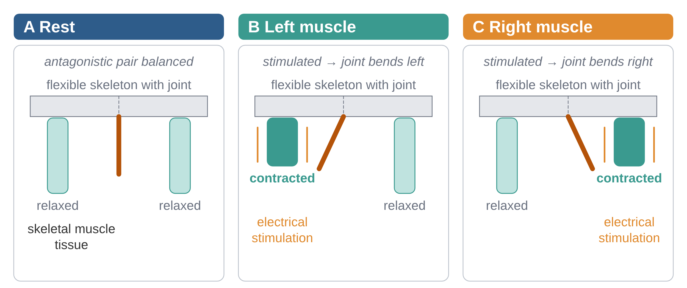
| Approach | Controllability | Autonomy |
|---|---|---|
| Prosthetics | High (external control) | Low (no biological input) |
| Implants | Moderate (engineered fit) | Limited (no adaptation) |
| Tissue engineering | Moderate (bioreactors, scaffolds) | Partial (cells remodel) |
| Biofabrication | Tunable (design-driven) | High (self-organisation) |
| Feature | Skeletal muscle bioactuators | Cardiomyocyte bioactuators |
|---|---|---|
| Activation | Require external stimulation (electrical, optical, or chemical) to contract. | Contract spontaneously and rhythmically (pacemaker-like activity). |
| Control | High degree of control: contraction can be tuned by pulse frequency, duration, and intensity. | Limited external control: cells beat autonomously, though frequency can be modulated by drugs or mechanical cues. |
| Force generation | Can generate relatively large, directed forces, especially when aligned and bundled. | Produce smaller forces, but continuous rhythmic contractions provide steady actuation. |
| Applications in robotics | Walking biohybrid robots, gripping devices, antagonistic “muscle pairs” mimicking limbs. | Microfluidic pumps, microswimmers, self-beating cantilevers, oscillatory motion systems. |
| Advantages | Stronger force output, scalable, precise control over motion. | Self-powered (no external wiring needed), continuous actuation, simplicity of design. |
| Challenges | Requires stimulation system, risk of fatigue with repeated use. | Less tunable, limited force output, synchronisation across tissue patches. |
Why this matters for biorobotics
They offer energy efficiency: muscle tissue converts chemical energy directly into motion.
They allow self-repair and adaptation, something synthetic actuators can’t yet match.
They push robotics into the realm of living machines, where organic and artificial parts merge.
Challenges remain: keeping cells alive long-term (nutrient and oxygen supply, bioreactors), integrating with electronics, and scaling forces to useful levels. But these biohybrid systems blur the line between biology and machine—living motors for robots that could one day crawl, swim, or pump like real organisms.
This is part of a larger narrative: robotics moving away from rigid, gear-driven devices toward soft, lifelike machines that could explore environments too delicate or complex for traditional robots.
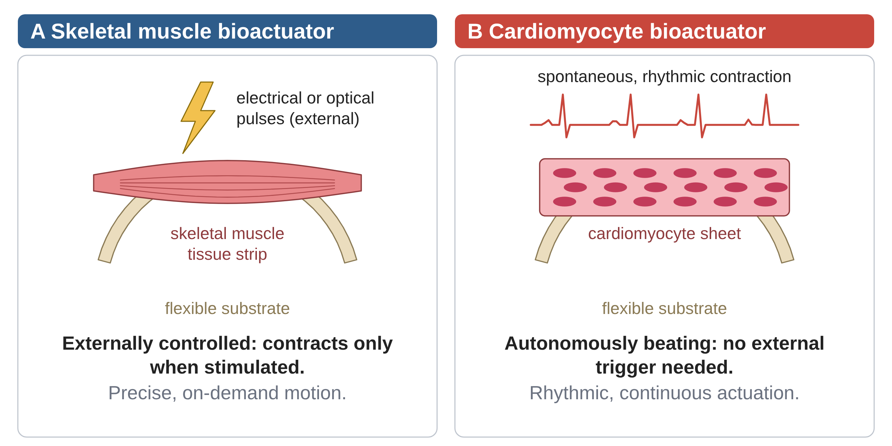
Two analogies help to tell the two actuator types apart:
Skeletal muscle actuators are like programmable motors—you control when and how they contract.
Cardiomyocyte actuators are like built-in oscillators—they beat on their own, useful where rhythmic motion is desired.
Together, these examples demonstrate that biofabrication is not limited to repairing the human body but is a versatile technology platform with broad impact. This broader scope demonstrates why understanding the extracellular matrix and its biofabrication is essential, a topic developed in Chapter 2.
1.6 Definition of Biofabrication
Because biofabrication is a rapidly evolving field, multiple definitions coexist. A general working definition describes it as the production of complex biological products from living cells, biomaterials, and matrices, which may include purely biological tissues or hybrid constructs that integrate living and non-living components.
The International Society for Biofabrication (ISBF) provides a widely accepted definition (Groll et al., 2016; Moroni et al., 2018):
“The automated generation of biologically functional products with structural organisation from living cells, bioactive molecules, biomaterials, cell aggregates such as micro-tissues, or hybrid cell-material constructs, through bioprinting or bioassembly, and subsequent tissue maturation processes.”
Together, these definitions emphasise two central ideas:
Biofabrication is more than “hand-crafted” tissue engineering — it stresses automation, reproducibility, and scalability.
It involves not only the assembly of components (cells, biomaterials, bioactive molecules) but also their maturation into functional tissues or products.
Figure 1.18 contrasts the two approaches: tissue engineering supplies the ingredients — cells, scaffolds, bioactive molecules and bioreactor culture — whereas biofabrication adds digital design, automated assembly by bioprinting or bioassembly, controlled maturation, and the standardisation and quality control that make products reproducible and scalable.
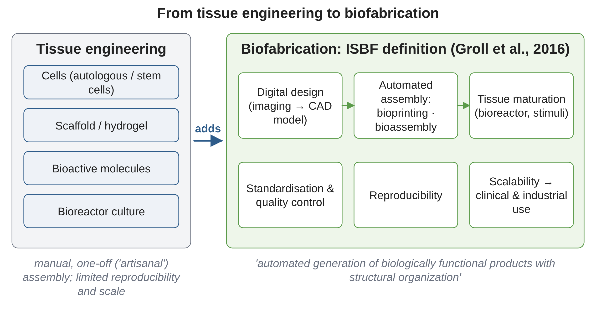
1.7 Ethical Horizon and Societal Context of Biofabrication
As biofabrication advances from laboratory research to clinical and industrial applications, it raises pressing ethical and societal questions. These concerns extend beyond technical feasibility and touch on fairness, safety, regulation, and public trust. Addressing them is essential if biofabrication is to move from promising prototypes to responsible real-world use (Figure 1.19).
Prosthetic regulation
High-performance prosthetic devices — such as advanced carbon-fibre running blades — blur the boundary between medical assistance and human enhancement. Should they be classified strictly as medical devices, or do they also need regulation within sports to preserve fair competition? These questions reveal how biofabrication challenges existing legal and ethical categories.
Equitable access to organs
Bioprinted organs and tissues could revolutionise transplantation, but they may also be costly. This raises the issue of who will have access. If biofabricated organs remain limited to wealthy patients or countries, inequalities in healthcare could deepen rather than diminish. Policies for equitable distribution are therefore crucial.
DIY biofabrication labs
The rise of community and “do-it-yourself” biology labs democratises access to biofabrication tools, but it also raises safety and regulatory concerns. Without proper standards, open experimentation could lead to accidents or misuse. Guidelines are needed to balance open science with biosafety.
Regulation of biofabricated products
Which rules apply to a biofabricated product depends on what it contains. In the European Union, constructs that contain living cells are regulated as advanced therapy medicinal products (ATMPs) under Regulation (EC) No 1394/2007 — the same framework as gene and cell therapies — whereas cell-free constructs such as printed scaffolds or acellular vessels fall under the Medical Device Regulation (EU) 2017/745. In the United States, the FDA assigns products to its device, biologics or combination-product pathways case by case. The classification determines the evidence required before patients can be treated, and therefore the cost and duration of development — a practical reason why many first products (Symvess, printed implants) are cell-free.
Balancing innovation and oversight
Rapid scientific progress can outpace regulatory systems. Too much oversight may slow innovation; too little may put patients and society at risk. Biofabrication highlights the need for flexible regulatory frameworks that protect people without stifling discovery.
Multidisciplinary dialogue
Ethical and societal issues in biofabrication cannot be solved by scientists alone. They require collaboration across fields — ethics, law, economics, and policy — as well as dialogue with patients and the broader public. Only through such engagement can biofabrication develop in a way that is both innovative and socially responsible.
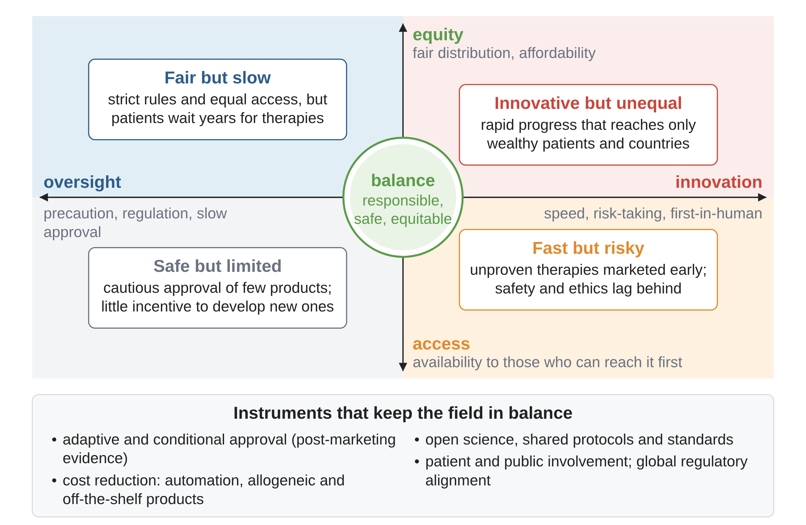
Figure 1.19 brings these issues together in a single map built on two axes. The horizontal axis sets oversight — precaution, regulation and slow approval — against innovation, with its speed, risk-taking and first-in-human use; the vertical axis sets equity, meaning fair and affordable distribution, against access for those who can reach new therapies first. Each corner of the map shows what happens when one pair of priorities dominates: fair but slow, safe but limited, innovative but unequal, or fast but risky. Responsible biofabrication sits at the centre, and the panel below the map lists the instruments that keep it there: adaptive and conditional approval, cost reduction through automation and off-the-shelf products, open science with shared protocols and standards, and patient and public involvement combined with global regulatory alignment. The debates on prosthetics, access to organs, DIY laboratories and regulation in this section can each be located on this map.
1.8 Summary
Humans have limited regeneration capacity compared to salamanders or axolotls.
Historically, two replacement strategies: engineered prosthetics/implants and biological transplantation.
Both approaches have fundamental limitations (wear, rejection, shortage).
Tissue engineering emerged to grow living tissues using patient cells.
Biofabrication industrialises tissue engineering for scalable, reproducible therapies.
Applications extend beyond regeneration to pharmaceuticals, diagnostics, and biohybrid robotics.
Regulators now accept human-relevant, non-animal models (organ chips, computational models), and the first bioengineered tissues have reached the clinic — pull factors for biofabrication.
From myths and prosthetics to tissue engineering, surgical robotics, and biofabrication, this chapter has shown how medicine and engineering have become inseparable. The historical roots, technological advances, and ethical questions together provide the foundation for understanding how biofabrication will shape the future of healthcare.
Looking ahead. Chapter 2 starts the technical part of the book with two foundations of every biofabricated tissue: cells that organise themselves without a scaffold — cell sheets, spheroids and organoids — and the extracellular matrix that gives tissues their structure and their signals.
1.9 Exercises
Table 1.4 gives an overview of the exercises in this chapter: the conceptual, quantitative and computational exercises, what each block focuses on, and the section in which the background for each exercise is found.
| Block | Focus | Exercises (section) |
|---|---|---|
| Block 1: Historical Roots & Early Approaches (Exercises 1–3) | Cultural and medical origins of body repair. | 1. From myths to prosthetics (1.2.1) 2. Implants and transplantation (1.2) 3. Early tissue engineering (1.3) |
| Block 2: Engineering in Medicine & Diagnostics (Exercises 4–6) | Role of engineering tools and innovations in clinical practice. | 4. Engineering tools in medicine (1.4) 5. Surgical robotics (1.4) 6. Diagnostics and monitoring (1.4) |
| Block 3: Biofabrication & Future Perspectives (Exercises 7–12) | Definitions, applications, ethics, and future scope. | 7. Defining biofabrication (1.6) 8. Applications beyond regenerative medicine (1.5) 9. Ethical and societal aspects (1.7) 10. Figure 1.19 – Ethical landscape of biofabrication (1.7) 11. Figure 1.18 – From Tissue Engineering to Biofabrication (1.6) 12. Integration of biology and engineering (whole chapter) |
| Quantitative / Applied (Exercises Q1–Q3) | Short calculations on the need for biofabrication. | Q1. The size of the shortage (1.2.2) Q2. Implant lifetime and revision surgery (1.2.1) Q3. How long does it take to grow a tissue? (1.1, 1.3) |
| Computational, Google Colab (Exercise 1) | Interactive notebook; no programming required. | 1. Why Biofabrication? Four quantitative case studies (1.2, 1.5) |
1.9.1 Conceptual Exercises
To consolidate the concepts introduced in this chapter, a set of conceptual exercises is provided. These exercises are organised into three thematic blocks (Table 1.4), guiding readers from historical and medical roots (Block 1), through engineering innovations in medicine and diagnostics (Block 2), to biofabrication, its future applications, and ethical considerations (Block 3).
Block 1: Historical Roots & Early Approaches (Exercises 1–3)
Exercise 1: From myths to prosthetics
Explain how myths and early prosthetic devices reflect humanity’s long-standing ambition to repair or replace the human body. Give one historical example and its limitation.
Exercise 2: Implants and transplantation
Compare implants and organ transplantation: what medical problems did each solve, and what new challenges did they introduce (e.g. rejection, shortage, wear)?
Exercise 3: Early tissue engineering
Describe how the emergence of tissue engineering built on the limitations of implants and transplantation. What were the first tissues engineered successfully?
Block 2: Engineering in Medicine & Diagnostics (Exercises 4–6)
Exercise 4: Engineering tools in medicine
List two examples of engineered devices (e.g. catheters, imaging systems, bypass machines) and explain how they changed medical practice.
Exercise 5: Surgical robotics
Using the Da Vinci system as an example, discuss how robotics has transformed surgery. What are the advantages and limitations of robotic systems?
Exercise 6: Diagnostics and monitoring
Explain how engineering innovations in imaging and monitoring technologies have improved diagnosis and patient care.
Block 3: Biofabrication & Future Perspectives (Exercises 7–12)
Exercise 7: Defining biofabrication
Summarise the ISBF definition of biofabrication. Why is automation central to the field?
Exercise 8: Applications beyond regenerative medicine
Give two examples where biofabrication is applied outside of tissue replacement (e.g. organ-on-chip, infection models, biohybrid robotics).
Exercise 9: Ethical and societal aspects
Choose one of the four issues raised in Section 1.7 (prosthetic enhancement, equitable access, DIY biology, regulation). Formulate the strongest argument on each side of the issue, and propose one concrete measure — technical, legal or economic — that would reduce the tension.
Exercise 10: Figure 1.19 – Ethical landscape of biofabrication
Using Figure 1.19, analyse the ethical tensions that shape the future of biofabrication.
Which quadrant do you think represents the greatest risk for society, and why?
Which quadrant could slow down innovation the most, and what trade-offs does it involve?
Suggest one policy or strategy that could help balance innovation with equity.
Reflection: How can scientists contribute to ensuring that biofabrication is both safe and accessible, without stifling innovation?
Exercise 11: Figure 1.18 – From Tissue Engineering to Biofabrication
Using Figure 1.18, analyse the transition from traditional tissue engineering to modern biofabrication.
Identify the inputs: What basic components are used in tissue engineering (left box)?
Contrast the processes: Which new elements are introduced in biofabrication that are not part of classic tissue engineering?
Scalability vs. artisanal: Why does biofabrication allow reproducibility and scaling, while tissue engineering is often described as “one-off” or “artisanal”?
Reflection: How does automation (e.g. bioprinting, robotic assembly) change the role of the researcher compared to earlier tissue engineering approaches?
Exercise 12: Integration of biology and engineering
Reflect on how the progression from myths and prosthetics to modern biofabrication illustrates the integration of biology and engineering. How does this integration shape the future of medicine?
1.9.2 Quantitative / Applied Exercises
Exercise Q1: The size of the shortage. Using the US figures in Section 1.2.2 (about 110,000 candidates on the waiting list, 49,000 transplants per year, 12 deaths per day), calculate (a) the annual number of deaths on the waiting list, (b) the fraction of candidates transplanted per year, and (c) how many additional organs per year would be needed to eliminate waiting-list deaths if each death corresponds to one missing organ. Discuss why the real number is higher.
Exercise Q2: Implant lifetime and revision surgery. Assume the survival of a hip implant is 95 % at 10 years, 85 % at 20 years and 70 % at 30 years, and that revisions are needed whenever an implant fails. For a 55-year-old patient with a life expectancy of 85 years, estimate the probability of at least one revision. How does the answer change for a biofabricated implant that integrates with bone and has a 30-year survival of 97 %?
Exercise Q3: How long does it take to grow a tissue? A 1 cm³ engineered construct requires about 10⁸ cells. Starting from 10⁶ cells with a population doubling time of 24 h, how many days of expansion are needed? Compare this with the ~4 months an axolotl needs to regrow a limb and the 6–12 weeks for a human fracture to heal, and comment on which step (expansion, assembly or maturation) is likely to limit the production of a clinical-size tissue.
1.9.3 Computational Exercises (Google Colab)
The exercises in this section are supported by an interactive Python notebook running in Google Colab. This environment allows calculations and simulations to be performed directly in the browser, without local software installation.
The notebook is structured as a self-contained, executable module with explanations, parameterisable models and graphical visualisations. It is designed to put numbers on the motivation for biofabrication presented in this chapter: how often implants fail, how much organ logistics costs, what nature can and cannot regenerate, and how large the economic opportunity is. The notebook can be opened and executed directly via the provided Colab link.
1.9.3.1 Exercise 1 — Why Biofabrication? Four Quantitative Case Studies
Problem Statement
This exercise translates the qualitative arguments of Chapter 1 into four interactive simulations. It covers the limited lifetime of engineered implants and the cost of revision surgery (Section 1.2.1), the timing constraints that make organ transplantation a logistical race against ischaemia (Section 1.2.2), the regenerative capacity that humans lack but other species possess (Section 1.1 and Figure 1.2), and the market-wide economics that will decide whether biofabricated products become accessible (Section 1.7). All simulations are interactive: readers adjust parameters via sliders and drop-down menus and immediately observe the effect on revision rates, transport success, regeneration profiles and projected revenues.
The engineering challenge is to understand the trade-offs between:
implant durability versus implant cost, and how patient age and activity change the balance (Section 1.2.1),
organ viability time versus the accumulated delays of a multi-step transport chain (Section 1.2.2),
organismal complexity versus regenerative capacity across the animal kingdom (Section 1.1),
and production cost, adoption speed and market size in the economics of biofabrication (Section 1.7).
The notebook contains four interactive simulations, each with adjustable parameters:
Hip Replacement Lifetime Analysis — Monte Carlo simulation of 1,000 virtual patients: age at first implant (40–75 years), life expectancy (75–95 years), sex, implant material (standard and premium titanium, cobalt–chrome, ceramic, experimental bioactive) and healthcare system (six countries) determine the number of revision surgeries and the lifetime cost (Section 1.2.1),
Organ Transport Logistics — stochastic simulation of the six-step chain from procurement to recipient preparation for kidney, liver, heart, lung and pancreas, under different system efficiencies and weather conditions (Section 1.2.2),
Species Regeneration Comparison — radar charts and trade-off plots of tissue, organ, limb and neural regeneration scores for humans, mouse, zebrafish, axolotl, planarian, hydra and starfish (Section 1.1, Figure 1.2),
Economic Impact Calculator — market projections for organ transplantation, orthopaedic implants, cardiovascular devices, prosthetics, skin grafts and drug testing under optimistic to pessimistic cost scenarios, 5–20-year adoption timelines and variable R&D investment (Section 1.7).
Learning Outcomes
After completing this exercise, you should be able to:
Estimate the expected number of revision surgeries and the lifetime cost of a load-bearing implant from its survival distribution and the patient’s age.
Explain why Monte Carlo sampling is needed when implant lifetime is a distribution rather than a fixed number.
Identify the bottleneck step in an organ transport chain and quantify the fraction of organs lost when the total time exceeds the viability window.
Compare regenerative capacity across species and discuss the evolutionary trade-off between complexity and regeneration.
Build a simple market projection (growth, addressable fraction, penetration, adoption curve) and test its sensitivity to cost and timeline assumptions.
Formulate quantitative target specifications (lifetime, cost, availability) that a biofabricated product must meet to compete with current solutions.
Theoretical Background
1) Implant revisions. If a patient receives a first implant at age \(a_{0}\), has a life expectancy \(L\) and the implant lasts \(\tau\) years, the number of revision surgeries is
\[N_{rev} = max(0,\, n - 1),\quad\quad n = \text{smallest integer} \geq \frac{L - a_{0}}{\tau}\]
In the simulation \(\tau\) is not fixed but drawn for each virtual patient from a normal distribution with a material-specific mean \(\tau_{m}\) (18 years for standard titanium, 30 years for the experimental bioactive material) and standard deviation \(\sigma_{\tau}\) (4–6 years), multiplied by an activity factor \(g\) (0.92 for men, 1.08 for women) and truncated to 8–40 years.
2) Lifetime cost. With a primary surgery cost \(C_{s}\) (country base cost × material multiplier) and a revision cost multiplier \(m\) (1.1–1.4),
\[C_{tot} = C_{s}\,\left( 1 + m\, N_{rev} \right),\quad\quad C_{annual} = \frac{C_{tot}}{L - a_{0}}\]
3) Transport chain. The total time from procurement to transplantation is the sum of six step durations, each drawn from a gamma distribution; the two transport legs and the hub processing are scaled by an efficiency factor \(f_{eff}\) (0.65–1.4) and a weather factor \(f_{w}\) (1.0–1.8):
\[t_{tot} = t_{proc} + t_{prep} + f_{eff}f_{w}\,\left( t_{1} + t_{2} \right) + f_{eff}\, t_{hub} + t_{rec}\]
An organ is transplanted successfully if \(t_{tot} \leq t_{\max}\), with \(t_{\max}\) = 36 h (kidney), 20 h (pancreas), 12 h (liver), 8 h (lung) and 6 h (heart). Over \(N\) simulated organs the success rate is \(P = N_{success}/N\) and the expected economic loss is \((1 - P)\, N\, V_{organ}\), where \(V_{organ}\) is the value of a successful transplant.
4) Regeneration index. Each species is scored from 0 to 10 for tissue, organ, limb and neural regeneration; the mean score
\[\overline{R} = \frac{1}{4}\sum_{i = 1}^{4}s_{i}\]
is plotted against organismal complexity, lifespan and metabolic rate to reveal evolutionary trade-offs.
5) Market projection. A current market \(M_{0}\) growing at rate \(g\) reaches, after \(T\) years,
\[M_{T} = M_{0}\,(1 + g)^{T},\quad\quad R_{biofab} = M_{T} \cdot f_{addr} \cdot p_{\max}\]
where \(f_{addr}\) is the fraction of the market that biofabrication can address and \(p_{\max}\) the maximum penetration. Adoption follows a quadratic ramp \(p(t) = p_{\max}\,(t/T)^{2}\) for \(t \leq T\), and the cumulative R&D investment grows as \(I(t) = I_{0}\,(1.1)^{t}\). The return on investment is the cumulative revenue divided by the cumulative investment.
Model Assumptions
The models are intentionally simplified to emphasise core mechanisms:
Implant lifetimes are normally distributed and independent of the number of previous revisions (in reality, revision implants fail sooner).
Costs are fixed per country and material; indirect costs (rehabilitation, time off work, quality of life) are not included.
Transport step times are independent and gamma-distributed; organ viability is a hard threshold rather than a gradual loss of quality.
Regeneration scores are semi-quantitative expert estimates, not measured rates.
Market figures are illustrative order-of-magnitude values (2024 baseline); readers should verify them against current market reports.
Despite these simplifications, the models reproduce the key qualitative conclusions of Chapter 1: implants wear out within a human lifetime, organ logistics wastes a substantial fraction of donated organs, and the economic case for biofabrication depends critically on production cost.
Digital Exercise (Google Colab)
This exercise is performed in an interactive Python notebook.
No local installation is required; the simulation runs entirely in the cloud. Scan the QR code or click the link below.
Launch Interactive Exercises in Google Colab
Tasks and Questions
For each interactive simulation, adjust the controls, observe the output, and answer the corresponding questions.
Simulation 1 — Hip Replacement Lifetime Analysis
Start from the default patient (55 years, life expectancy 82, standard titanium, United States). How many revisions does the average patient need, and what fraction of patients need none? Explain the shape of the revision histogram.
Lower the age at first implant to 45 and raise the life expectancy to 90. How do the expected number of revisions and the lifetime cost change? Compare with the analytical estimate of Exercise Q2 in Section 1.9.2.
Compare standard titanium with the experimental bioactive material. At which age at first implant does the premium material become cheaper over a lifetime? Why does the answer depend on the country?
Formulate the target specifications (mean lifetime, standard deviation, cost multiplier) that a biofabricated, bone-integrating implant would need to eliminate revisions for a 50-year-old patient.
Simulation 2 — Organ Transport Logistics
With standard efficiency and good weather, compare the success rate of kidney and heart transport. Which organ is most sensitive to the logistics chain, and why?
Identify the step with the largest variability in the bottleneck plot. Which single improvement (efficiency level) would raise the heart transport success rate above 90 %?
Set severe weather and poor efficiency for a liver. Estimate the economic loss per 1,000 organs and compare it with the value delivered. How does this loss relate to the 12 daily deaths on the waiting list quoted in Section 1.2.2?
Which constraint of transplantation would be removed by a biofabricated organ produced on site, and which new constraints (production time, cell expansion, see Exercise Q3) would replace it?
Simulation 3 — Species Regeneration Comparison
Compare the regeneration radar charts of humans, axolotl and zebrafish. In which category is the human deficit largest?
Switch to the evolutionary trade-off view. Is there a correlation between complexity and regenerative capacity? Which species break the trend, and what does this suggest about the mechanisms involved?
The axolotl regrows a limb in about four months (Figure 1.2). Compare this with the expansion time calculated in Exercise Q3 and discuss which route — stimulating endogenous regeneration or biofabricating a replacement — is more realistic for a human limb, a skin wound and a cornea.
Rank the species by research relevance. Why is the mouse still the standard model although its regeneration scores are low?
Simulation 4 — Economic Impact Calculator
With the default settings (organ transplant, orthopaedic implants and prosthetics; realistic cost; moderate timeline; 25 % penetration), read the projected biofabrication revenue and the year in which cumulative revenue exceeds cumulative investment.
Switch the cost scenario from optimistic (30 % cheaper than the conventional product) to pessimistic (150 % more expensive). How does the break-even year move? What does this imply for the priority of cost reduction in biofabrication research?
Add drug testing and skin grafts to the target markets. Why do these smaller markets have a higher addressable fraction, and why are they the first commercial applications of biofabrication (Section 1.5)?
Vary the maximum penetration between 5 % and 80 %. Which single assumption dominates the projection, and how would you justify a value to an investor or a health-insurance agency (Section 1.7)?
Core Message
Biofabrication is not motivated by curiosity alone but by measurable shortcomings of current medicine: implants that fail within a lifetime, organs lost to the clock, and a regenerative capacity that evolution has traded away in complex animals. Quantifying these shortcomings — and the cost at which a biofabricated alternative would have to be produced — is the first step in deciding which applications are worth pursuing.
1.10 References
1.10.1 Further Reading
General reviews on biofabrication
- Murphy, S.V., & Atala, A. (2014). 3D bioprinting of tissues and organs. Nature Biotechnology, 32, 773–785. https://doi.org/10.1038/nbt.2958
→ Widely cited review summarizing the promise and early methods of bioprinting.
- Mandrycky, C., Wang, Z., Kim, K., & Kim, D.-H. (2015). 3D bioprinting for engineering complex tissues. Biotechnology Advances, 33(3), 543–553.
https://doi.org/10.1016/j.biotechadv.2015.12.011
→ Concise, accessible review of 3D bioprinting strategies and applications; a good entry point for students.
- Groll, J., Boland, T., Blunk, T., et al. (2016). Biofabrication: reappraising the definition of an evolving field. Biofabrication, 8(1), 013001. https://doi.org/10.1088/1758-5090/8/1/013001
→ Defines and frames biofabrication as a distinct scientific discipline.
Historical milestones and definitions
- Mironov, V., Boland, T., Trusk, T., Forgacs, G., & Markwald, R.R. (2003). Organ printing: computer-aided jet-based 3D tissue engineering. Trends in Biotechnology, 21(4), 157–161. https://doi.org/10.1016/S0167-7799(03)00033-7
→ Introduced the concept of “organ printing,” an early vision for automated tissue construction.
- Groll, J., Burdick, J.A., Cho, D.-W., et al. (2019). A definition of bioinks and their distinction from biomaterial inks. Biofabrication, 11(1), 013001. https://doi.org/10.1088/1758-5090/aaec52
→ ISBF consensus definitions of bioinks and biomaterial inks; the field definition itself is in Groll et al. (2016) and Moroni et al. (2018).
Tissue engineering and materials foundations
- Atala, A., Bauer, S.B., Soker, S., Yoo, J.J., & Retik, A.B. (2006). Tissue-engineered autologous bladders for patients needing cystoplasty. The Lancet, 367(9518), 1241–1246. https://doi.org/10.1016/S0140-6736(06)68438-9
→ Landmark first-in-human clinical demonstration of engineered tissues.
- Malda, J., Visser, J., Melchels, F.P.W., et al. (2013). 25th anniversary article: Engineering hydrogels for biofabrication. Advanced Materials, 25(36), 5011–5028. https://doi.org/10.1002/adma.201302042
→ Classic review on hydrogels as biomaterials for tissue engineering.
Applications beyond regenerative medicine
- Whitesides, G.M. (2006). The origins and the future of microfluidics. Nature, 442, 368–373 https://doi.org/10.1038/nature05058
→ Foundational paper on lab-on-a-chip, a key technology for diagnostics in biofabrication.
- Morimoto, Y., Onoe, H., & Takeuchi, S. (2018). Biohybrid robot powered by an antagonistic pair of skeletal muscle tissues. Science Robotics, 3(18), eaat4440. https://doi.org/10.1126/scirobotics.aat4440
→ Demonstrates a functional biohybrid robot actuated by engineered skeletal muscle tissues.
- Raman, R., Bashir, R., et al. (2024). Biofabrication of living actuators. Annual Review of Biomedical Engineering, 26, 511–538. https://doi.org/10.1146/annurev-bioeng-110122-013805
→ State-of-the-art review on how engineered tissues are used as actuators for robotics, sensing, and beyond medicine.
Link to extracellular matrix (bridging to Chapter 2)
- Naba, A. (2024). Mechanisms of assembly and remodelling of the extracellular matrix. Nature Reviews Molecular Cell Biology, 25(11), 865–885. https://doi.org/10.1038/s41580-024-00767-3
→ State-of-the-art review on ECM assembly and remodelling, connecting biology to biofabrication concepts.
1.10.2 References
3DBio Therapeutics, 2022. 3DBio Therapeutics and the Microtia-Congenital Ear Deformity Institute conduct human ear reconstruction using 3D-bioprinted living tissue implant in a first-in-human clinical trial. Press release, 2 June 2022. https://www.businesswire.com/news/home/20220602005051/en/
Acevedo Rua, L., Mumme, M., Manferdini, C., Darwiche, S., Khalil, A., Hilpert, M., Buchner, D.A., Lisignoli, G., Occhetta, P., von Rechenberg, B., Haug, M., Schaefer, D.J., Jakob, M., Caplan, A., Martin, I., Barbero, A., Pelttari, K., 2021. Engineered nasal cartilage for the repair of osteoarthritic knee cartilage defects. Sci. Transl. Med. 13, eaaz4499. https://doi.org/10.1126/scitranslmed.aaz4499
Atala, A., Bauer, S.B., Soker, S., Yoo, J.J., Retik, A.B., 2006. Tissue-engineered autologous bladders for patients needing cystoplasty. The Lancet 367, 1241–1246. https://doi.org/10.1016/S0140-6736(06)68438-9
Aung, A., Kumar, V., Theprungsirikul, J., Davey, S.K., Varghese, S., 2020. An Engineered Tumor-on-a-Chip Device with Breast Cancer–Immune Cell Interactions for Assessing T-cell Recruitment. Cancer Res. 80, 263–275. https://doi.org/10.1158/0008-5472.CAN-19-0342
Barbarino, J.M., Staatz, C.E., Venkataramanan, R., Klein, T.E., Altman, R.B., 2013. PharmGKB summary: cyclosporine and tacrolimus pathways. Pharmacogenet. Genomics 23, 563–585. https://doi.org/10.1097/FPC.0b013e328364db84
Bersini, S., Jeon, J.S., Dubini, G., Arrigoni, C., Chung, S., Charest, J.L., Moretti, M., Kamm, R.D., 2014. A microfluidic 3D in vitro model for specificity of breast cancer metastasis to bone. Biomaterials 35, 2454–2461. https://doi.org/10.1016/j.biomaterials.2013.11.050
Cao, Y., Vacanti, J.P., Paige, K.T., Upton, J., Vacanti, C.A., 1997. Transplantation of Chondrocytes Utilizing a Polymer-Cell Construct to Produce Tissue-Engineered Cartilage in the Shape of a Human Ear. Plast. Reconstr. Surg. 100, 297.
CARMAT, 2025. CARMAT provides an update on the ongoing receivership procedure. Press release, 1 December 2025. https://www.carmatsa.com/en/press-release/
Chan, V., Park, K., Collens, M.B., Kong, H., Saif, T.A., Bashir, R., 2012. Development of Miniaturized Walking Biological Machines. Sci. Rep. 2, 857. https://doi.org/10.1038/srep00857
Dananjaya, S.A.V., Chevali, V.S., Dear, J.P., Potluri, P., Abeykoon, C., 2024. 3D printing of biodegradable polymers and their composites – Current state-of-the-art, properties, applications, and machine learning for potential future applications. Prog. Mater. Sci. 146, 101336. https://doi.org/10.1016/j.pmatsci.2024.101336
Feinberg, A.W., Alford, P.W., Jin, H., Ripplinger, C.M., Werdich, A.A., Sheehy, S.P., Grosberg, A., Parker, K.K., 2012. Controlling the contractile strength of engineered cardiac muscle by hierarchal tissue architecture. Biomaterials 33, 5732–5741. https://doi.org/10.1016/j.biomaterials.2012.04.043
Goyanes, A., Wang, J., Buanz, A., Martínez-Pacheco, R., Telford, R., Gaisford, S., Basit, A.W., 2015. 3D Printing of Medicines: Engineering Novel Oral Devices with Unique Design and Drug Release Characteristics. Mol. Pharm. 12, 4077–4084. https://doi.org/10.1021/acs.molpharmaceut.5b00510
Groll, J., Boland, T., Blunk, T., Burdick, J.A., Cho, D.-W., Dalton, P.D., Derby, B., Forgacs, G., Li, Q., Mironov, V.A., Moroni, L., Nakamura, M., Shu, W., Takeuchi, S., Vozzi, G., Woodfield, T.B.F., Xu, T., Yoo, J.J., Malda, J., 2016. Biofabrication: reappraising the definition of an evolving field. Biofabrication 8, 013001. https://doi.org/10.1088/1758-5090/8/1/013001
Hassell, B.A., Goyal, G., Lee, E., Sontheimer-Phelps, A., Levy, O., Chen, C.S., Ingber, D.E., 2017. Human Organ Chip Models Recapitulate Orthotopic Lung Cancer Growth, Therapeutic Responses, and Tumor Dormancy In Vitro. Cell Rep. 21, 508–516. https://doi.org/10.1016/j.celrep.2017.09.043
HRSA, 2026. Organ donation statistics. Health Resources & Services Administration, U.S. Department of Health and Human Services. https://www.organdonor.gov/learn/organ-donation-statistics (accessed September 2026)
Huh, D., Matthews, B.D., Mammoto, A., Montoya-Zavala, M., Hsin, H.Y., Ingber, D.E., 2010. Reconstituting Organ-Level Lung Functions on a Chip. Science 328, 1662–1668. https://doi.org/10.1126/science.1188302
Jang, K.-J., Otieno, M.A., Ronxhi, J., Lim, H.-K., Ewart, L., Kodella, K.R., Petropolis, D.B., Kulkarni, G., Rubins, J.E., Conegliano, D., Nawroth, J., Simic, D., Lam, W., Singer, M., Barale, E., Singh, B., Sonee, M., Streeter, A.J., Manthey, C., Jones, B., Srivastava, A., Andersson, L.C., Williams, D., Park, H., Barrile, R., Sliz, J., Herland, A., Haney, S., Karalis, K., Ingber, D.E., Hamilton, G.A., 2019. Reproducing human and cross-species drug toxicities using a Liver-Chip. Sci. Transl. Med. 11, eaax5516. https://doi.org/10.1126/scitranslmed.aax5516
Jang, K.-J., Suh, K.-Y., 2010. A multi-layer microfluidic device for efficient culture and analysis of renal tubular cells. Lab. Chip 10, 36–42. https://doi.org/10.1039/B907515A
Kawai, T., Williams, W.W., Elias, N., et al., 2025. Xenotransplantation of a porcine kidney for end-stage kidney disease. N. Engl. J. Med. 392, 1933–1940. https://doi.org/10.1056/NEJMoa2412747
Kim, H.J., Huh, D., Hamilton, G., Ingber, D.E., 2012. Human gut-on-a-chip inhabited by microbial flora that experiences intestinal peristalsis-like motions and flow. Lab. Chip 12, 2165–2174. https://doi.org/10.1039/C2LC40074J
Klemm, D., Cranston, E.D., Fischer, D., Gama, M., Kedzior, S.A., Kralisch, D., Kramer, F., Kondo, T., Lindström, T., Nietzsche, S., Petzold-Welcke, K., Rauchfuß, F., 2018. Nanocellulose as a natural source for groundbreaking applications in materials science: Today’s state. Mater. Today 21, 720–748. https://doi.org/10.1016/j.mattod.2018.02.001
Li, J., Mooney, D.J., 2016. Designing hydrogels for controlled drug delivery. Nat. Rev. Mater. 1, 16071. https://doi.org/10.1038/natrevmats.2016.71
Ma, X., Liu, J., Zhu, W., Tang, M., Lawrence, N., Yu, C., Gou, M., Chen, S., 2018. 3D bioprinting of functional tissue models for personalized drug screening and in vitro disease modeling. Adv. Drug Deliv. Rev., 3D-Bioprinting and Micro-/Nano-Technology: Emerging Technologies in Biomedical Sciences 132, 235–251. https://doi.org/10.1016/j.addr.2018.06.011
Ma, X., Qu, X., Zhu, W., Li, Y.-S., Yuan, S., Zhang, H., Liu, J., Wang, P., Lai, C.S.E., Zanella, F., Feng, G.-S., Sheikh, F., Chien, S., Chen, S., 2016. Deterministically patterned biomimetic human iPSC-derived hepatic model via rapid 3D bioprinting. Proc. Natl. Acad. Sci. 113, 2206–2211. https://doi.org/10.1073/pnas.1524510113
Maschmeyer, I., Lorenz, A.K., Schimek, K., Hasenberg, T., Ramme, A.P., Hübner, J., Lindner, M., Drewell, C., Bauer, S., Thomas, A., Sambo, N.S., Sonntag, F., Lauster, R., Marx, U., 2015. A four-organ-chip for interconnected long-term co-culture of human intestine, liver, skin and kidney equivalents. Lab. Chip 15, 2688–2699. https://doi.org/10.1039/C5LC00392J
Mohacsi, P., Leprince, P., 2014. The CARMAT total artificial heart. Eur. J. Cardiothorac. Surg. 46, 933–934. https://doi.org/10.1093/ejcts/ezu333
Morimoto, Y., Onoe, H., Takeuchi, S., 2018. Biohybrid robot powered by an antagonistic pair of skeletal muscle tissues. Sci. Robot. 3, eaat4440. https://doi.org/10.1126/scirobotics.aat4440
Moroni, L., Boland, T., Burdick, J.A., De Maria, C., Derby, B., Forgacs, G., Groll, J., Li, Q., Malda, J., Mironov, V.A., Mota, C., Nakamura, M., Shu, W., Takeuchi, S., Woodfield, T.B.F., Xu, T., Yoo, J.J., Vozzi, G., 2018. Biofabrication: a guide to technology and terminology. Trends Biotechnol. 36, 384–402. https://doi.org/10.1016/j.tibtech.2017.10.015
Murr, L.E., Gaytan, S.M., Martinez, E., Medina, F., Wicker, R.B., 2012. Next Generation Orthopaedic Implants by Additive Manufacturing Using Electron Beam Melting. Int. J. Biomater. 2012, 245727. https://doi.org/10.1155/2012/245727
Nguyen, D.G., Funk, J., Robbins, J.B., Crogan-Grundy, C., Presnell, S.C., Singer, T., Roth, A.B., 2016. Bioprinted 3D Primary Liver Tissues Allow Assessment of Organ-Level Response to Clinical Drug Induced Toxicity In Vitro. PLOS ONE 11, e0158674. https://doi.org/10.1371/journal.pone.0158674
Novacescu, D., Latcu, S.C., Raica, M., Baderca, F., Dumitru, C.-S., Daminescu, L., Bardan, R., Dema, V., Croitor, A., Cut, T.G., Cumpanas, A.A., 2024. Surgical Strategies for Renal Transplantation: A Pictorial Essay. J. Clin. Med. 13, 4188. https://doi.org/10.3390/jcm13144188
Sharma, A., Thakur, M., Bhattacharya, M., Mandal, T., Goswami, S., 2019. Commercial application of cellulose nano-composites – A review. Biotechnol. Rep. 21, e00316. https://doi.org/10.1016/j.btre.2019.e00316
Si, L., Bai, H., Rodas, M., Cao, W., Oh, C.Y., Jiang, A., Moller, R., Hoagland, D., Oishi, K., Horiuchi, S., Uhl, S., Blanco-Melo, D., Albrecht, R.A., Liu, W.-C., Jordan, T., Nilsson-Payant, B.E., Golynker, I., Frere, J., Logue, J., Haupt, R., McGrath, M., Weston, S., Zhang, T., Plebani, R., Soong, M., Nurani, A., Kim, S.M., Zhu, D.Y., Benam, K.H., Goyal, G., Gilpin, S.E., Prantil-Baun, R., Gygi, S.P., Powers, R.K., Carlson, K.E., Frieman, M., tenOever, B.R., Ingber, D.E., 2021. A human-airway-on-a-chip for the rapid identification of candidate antiviral therapeutics and prophylactics. Nat. Biomed. Eng. 5, 815–829. https://doi.org/10.1038/s41551-021-00718-9
Skardal, A., Shupe, T., Atala, A., 2016. Organoid-on-a-chip and body-on-a-chip systems for drug screening and disease modeling. Drug Discov. Today, Pathophysiology models for drug discovery 21, 1399–1411. https://doi.org/10.1016/j.drudis.2016.07.003
Sontheimer-Phelps, A., Hassell, B.A., Ingber, D.E., 2019. Modelling cancer in microfluidic human organs-on-chips. Nat. Rev. Cancer 19, 65–81. https://doi.org/10.1038/s41568-018-0104-6
Taboga, P., Drees, E.K., Beck, O.N., Grabowski, A.M., 2020. Prosthetic model, but not stiffness or height, affects maximum running velocity in athletes with unilateral transtibial amputations. Sci. Rep. 10, 1763. https://doi.org/10.1038/s41598-019-56479-8
U.S. FDA, 2024. FDA approves first acellular tissue engineered vessel to treat vascular trauma. Press release, 19 December 2024. U.S. Food and Drug Administration, Silver Spring, MD.
U.S. FDA, 2025. Roadmap to reducing animal testing in preclinical safety studies. U.S. Food and Drug Administration, April 2025.https://www.fda.gov/files/newsroom/published/roadmap_to_reducing_animal_testing_in_preclinical_safety_studies.pdf
U.S. FDA, 2026. FDA achieves year 1 goals in reducing animal testing in drug development. Press release, 20 April 2026. https://www.fda.gov/news-events/press-announcements/fda-achieves-year-1-goals-reducing-animal-testing-drug-development
Wells, K.M., Kelley, K., Baumel, M., Vieira, W.A., McCusker, C.D., 2021. Neural control of growth and size in the axolotl limb regenerate. eLife 10, e68584. https://doi.org/10.7554/eLife.68584
Whitesides, G.M., 2006. The origins and the future of microfluidics. Nature 442, 368–373. https://doi.org/10.1038/nature05058
Wood, M.A., Ellenbogen, K.A., 2002. Cardiac Pacemakers From the Patient’s Perspective. Circulation 105, 2136–2138. https://doi.org/10.1161/01.CIR.0000016183.07898.90
Woolley, B.E., 2026. Kidney xenotransplantation enters the clinical trial era. Artif. Organs 50, 1205–1206. https://doi.org/10.1111/aor.70217
Zhang, Y.S., Arneri, A., Bersini, S., Shin, S.-R., Zhu, K., Goli-Malekabadi, Z., Aleman, J., Colosi, C., Busignani, F., Dell’Erba, V., Bishop, C., Shupe, T., Demarchi, D., Moretti, M., Rasponi, M., Dokmeci, M.R., Atala, A., Khademhosseini, A., 2016. Bioprinting 3D microfibrous scaffolds for engineering endothelialized myocardium and heart-on-a-chip. Biomaterials 110, 45–59. https://doi.org/10.1016/j.biomaterials.2016.09.003